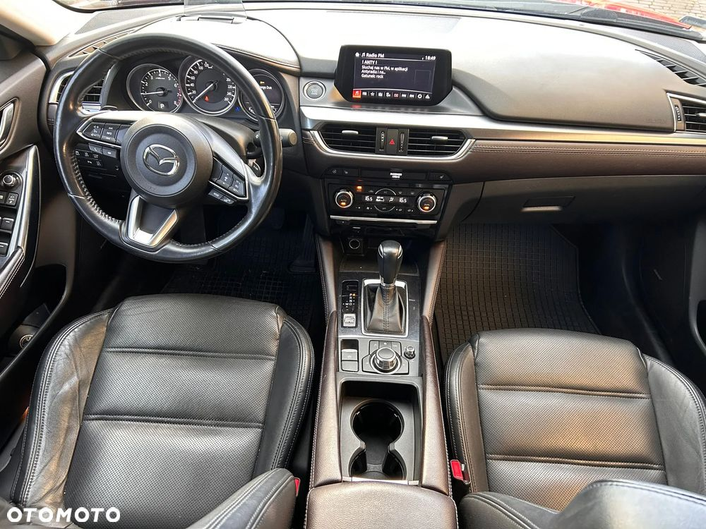
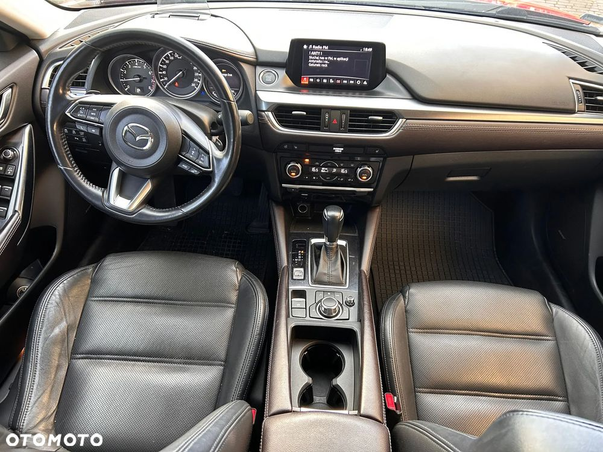

Sprzedam Mazdę 6 2,5 - typ GH Kombi wersja PRESTIGE.
Cena 82 500 zł do ewentualnej negocjacji.
Nr VIN: JMZGL693801541758
Silnik benzynowy 2488 cm³ o mocy 141 kW (195 kM), poziom emisji spalin EURO 6W.
Jesteśmy drugimi właścicielami od 10.03.2022 roku (szczegóły przekażę telefonicznie), samochód zakupiony w polskim salonie.
Data pierwszej rejestracji 13.02.2018r., przebieg ~144 300 km.
Samochód przez cały przebieg serwisowany w ASO, przeglądy udokumentowane, w bardzo dobrym stanie technicznym.
Przegląd techniczny wykonany 13.02.2025 r. bez zastrzeżeń, po wymianie klocków hamulcowych przednich i tylnych.
W ramach wykupionej przedłużonej gwarancji 12.09.2022 r. w ASO BEMO Motors wymieniono na nową kompletną automatyczną skrzynię biegów – wymiana udokumentowana fakturą przy stanie licznika 111 098 km.
Samochód nie uczestniczył w wypadku drogowym, miał tylko jedno nieduże parkingowe uszkodzenie LP drzwi – naprawiany w ASO Mazdy.
Na wyposażeniu są 2 kluczyki elektroniczne i 2 komplety kół na aluminiowych felgach (letnie 19 cali, zimowe 17 cali), zamontowano śruby zabezpieczające koła przed kradzieżą.
Do naprawy kół jest zestaw naprawczy.
Jest to najbogatsza wersja wyposażenia, w które wchodzi:
Czarna skórzana tapicerka - ABS - alarm antywłamaniowy - A-SCBS - system wspomagania hamowania (zapobiegający kolizjom przy małych prędkościach) - czujnik deszczu i zmierzchu - czujniki parkowania - przód i tył DSC - system stabilizacji toru jazdy z TCS EBA - elektroniczny asystent hamowania EBD - elektroniczny rozdział sił hamowania - system wspomagający utrzymanie pojazdu w pasie ruchu - hamulec postojowy, elektromechaniczny - SCBS-R system wspomagający hamowanie i zmniejszający ryzyko kolizji przy jeździe do tyłu.
Fotel kierowcy z regulacją podparcia lędźwiowego - przednie fotele podgrzewane i regulowane elektrycznie z pamięcią ustawień fotela kierowcy - gniazdo 12 V w bagażniku – Immobilizer - kamera cofania - wielofunkcyjna ogrzewana kierownica i dźwignia zmiany biegów wykończone skórą.
Klimatyzacja automatyczna - dwustrefowa z nawiewem na tylny rząd siedzeń - lampy tylne LED LAS - lusterka boczne regulowane elektrycznie, ogrzewane , boczne składane elektrycznie - lusterka boczne w kolorze nadwozia z kierunkowskazami - lusterko wewnętrzne elektrochromatyczne (przyciemniające się automatycznie).
Poduszki powietrzne boczne - kurtynowe - przednie kierowcy i pasażera. Reflektory przednie matrycowe LED z systemem adaptacyjnego doświetlania zakrętów (ALH) - relingi dachowe - roleta bagażnika.
System audio BOSE z 11 głośnikami - system kamer 360 - system monitorowania martwego pola BSM - system monitorowania ruchu poprzecznego przy cofaniu RCTA - system nawigacji Mazda. System rozrywki i łączności MZD Connect - system sterownia HMI - system wykrywający znużenie kierowcy (Driver Alert). Wyświetlacz centralny 8-calowy ze sterowaniem dotykowym - typu Head-up, kolorowy. Zaawansowany system dostępu bez kluczyka. Zestaw głośnomówiący Bluetooth.
Wszystkie szyby drzwi sterowane elektrycznie. Szyby tylnych drzwi przyciemniane - światła do jazdy dziennej LED - światła przednie z funkcją oświetlania drogi do domu. Tempomat adaptacyjny TSR - system rozpoznający znaki ograniczenia prędkości. Tuner cyfrowy DAB. Układ wspomagający ruszanie na wzniesieniu HLA. Wejście AUX/USB.
Oglądać można w Warszawie na Muranowie. Zapraszam tel. .


 
